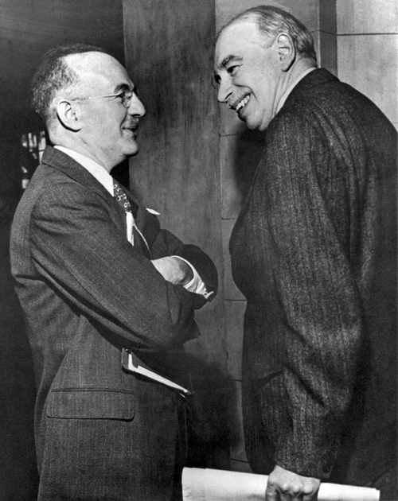

【金融】【战略】美元的金融霸权（一）
2014-10-02 21:29:00
原文网址：https://blog.udn.com/MengyuanWang/108908641
我在前几篇谈战略的文章里，好几次提到美元是现代美国霸权的基础，也是中共要打撃美国霸权的终极着力点。其实很多人都有这个印象，可是因为经济和金融专业性很高，细节很复杂，因果关系往往出人意料，所以美国到底是如何利用其金融霸权在全球榨取不义之财，一般的解释常常似是而非，或者不尽详实。当然我对这些成千上万的骗术也不可能完全了解，在这里只就我所看到那一小部分说一说。
在整个19世纪，国际金融所用的主要货币是英镑。到1890年代（这个时期的经济资料不太可靠，所以也有说是1910年代的），美国的国民生產毛额已经超过了大英帝国的总和，但是在此后的50年，英镑仍然是金融界的第一货币。这固然是受英国政治外交力量的影响，也有市场的惰性关系，但是其主要的原因是“网络效应”（Network Effect），也就是大家都用的东西自然特别方便，即使它并不是最好的。当初微软的视窗作业系统，就是靠这个效应吃下了整个个人电脑的市场。不过英国虽然因英镑的地位而受益，特别是可以用很低的利率来融资，在大部分的时间里，它占的便宜是有限的，这是因为当时的世界以金本位为主，霸权国家也不能乱印钞票。
经过两次世界大战，英国国势的衰颓再也掩盖不住了。在诺曼地登陆后，德国投降已经只是时间问题，于是美国召集了所有44个同盟国的代表，在1944年七月于新罕普夏州的渡假胜地Bretton Woods的一家豪华旅馆里开了三个礼拜的会，会谈的主题就是战后的国际金融体制。参加会谈的国家虽多，其实真正的话题是英镑该如何为美元让位，所以实际上是美国代表怀特（Harry Dexter White，四年后就被发现是苏联的间谍，随即很及时地“心臟病发”而死亡）和英国代表凯因斯（John Maynard Keynes，大名鼎鼎的20世纪最重要的经济学家）之间的角力，其他的国家只是在旁帮美国掠阵。当时英国的战时经济全靠美国接济，吃人的嘴软，拿人的手短，凯因斯知道不可能再维持英镑的国际地位了，因此他无私地建议创立一个全新的国际储备货币，由全世界共管。美国当然回答：“Absolutely No”，从而否决了这个正确的方案。Bretton Woods的结果是美元成了国际储备货币，同时建立了世界银行（World Bank）和国际货币基金会（IMF，International Monetary Fund），前者由美国人当总裁，后者的总裁由欧洲人选，但是总部也设在华盛顿，两者距离美国财政部不到半英哩，基本上都是后者的附属机构，受美国财政部长指挥。
怀特（左）在Bretton Woods志得意满，凯因斯（右）虽然笑容满面，其实是大输家。还好凯因斯两年后就死了，没有见到美国背信忘义的下流手段。
在1950和1960年代，美元虽然是国际储备货币，但是Bretton Woods的规定是仍然依循金本位制度，一两黄金35美元，美国的联邦储备银行（Federal Reserve Bank）要多印钞票必须先买下额外的黄金，因此美国的金融霸权所占的便宜并不大。到1971年，尼克森觉得凭空印钞票实在是太方便了，所以片面撕毁了Bretton Woods协定。其他西方强权抗议之后，尼克森在当年十二月签了新的Smithsonian协定，哄骗列强说印钞票到此为止，只把黄金价调整为38美元一两。实际上联邦储备银行根本就没有关掉印钞机，到1972年，大家都知道被美国骗了，又拿他没办法，只好跟着也印钞票，于是1970年代就成了通货膨胀完全失控的十年。
John Connally，尼克森的财政部长。当其他国家向他抗议美国违反条约，乱印钞票的时候，他回答：“The dollar is our currency, but your problem.”（“美元是我们的货币，可是是你们的问题。”）把美国在外交上一贯的流氓心态，表达得淋漓尽致。
虽然大家一起印钞票，真正能从空气中挤出銭来的只有美国，这是因为只有美元才是国际储备货币，大家的外匯都必须是美元，也就是不论联邦储备银行怎么拼命印，其他的中央银行都必须照单全收，否则不但你的货币升值影响出口，对衝基金（Hedge Fund）可以借利率低的美元换成你的货币来炒你的地皮或股市（这叫做Carry Trade），泡沫爆炸以后烂摊子还是你的（日本就是这様被整垮的，所以中共不敢开放人民币自由兑换）。反过来，美国根本不收藏其他国家的货币，所以别的央行跟着印钞票来买美元，这些钞票就只能留在国内，直接衝撃物价，结果就造成这个很奇怪的现象：美国拼命印钞票，通货膨胀却发生在别的国家，而且越是财务体质弱的国家，受衝撃就越大。当然凯因斯作为一代大师，完全预见了这个问题，但是他低估了美国人的无耻程度，以为一纸协定可以把美国绑住，结果美国金融霸权稳固之后，就片面丢弃了他原本承诺的义务，从此可以随意做銭。这些銭当然不是真正无中生有，而是从全世界其他国家榨出来的，套句台湾人爱用的话，就是美国国库直通其他国家的国库，高兴抢銭就抢銭。
2008年金融危机之后，美国已经做了三轮的“量化寛松”（Quantitative Easing），实际上就是堂而皇之地大印美钞，到这个月底正式结束，总共印了五万亿美元，也就是抢了全世界五万亿美元；这数目比美国十几年战争浪费在阿富汗和伊拉克的三万亿美元还要大得多。那为什么要停呢？有两个原因：第一个是虽然通货膨胀主要由其他国家消受，美国自己还是会受到间接影响。经过六年抢了全世界五万亿美元，美国的生產毛额年增率已经超出了3%，通货膨胀率虽然表面上还只有1%，但是它的反应是滞后于经济成长的；再印下去，通货膨胀率就有可能衝过头了。第二个原因是人民币在旁虎视眈眈，如果欺人太甚，只怕各国的中央银行都开始把外匯改存人民币。毕竟当初条约是美国自己撕毁的，现在美元作为国际储备货币纯粹是靠“网络效应”。
【待续】
12 条留言
个人觉的在史密斯协议之后，应该加上牙买加体系，也就是取消金本位后，以美元主导的国际货币体系。
这样可能更全面些，也好理解其他文章提到的特别提款权（SDR）。
military.china.com/.../20958654_7.html 借机温故知新了下。
PS：一两黄金35美元？调整为38美元一两？两处转载也是原文刊登的。
一两黄金35美元，有什么问题吗？现在一两黄金1000多美元，美元膨胀了30倍。